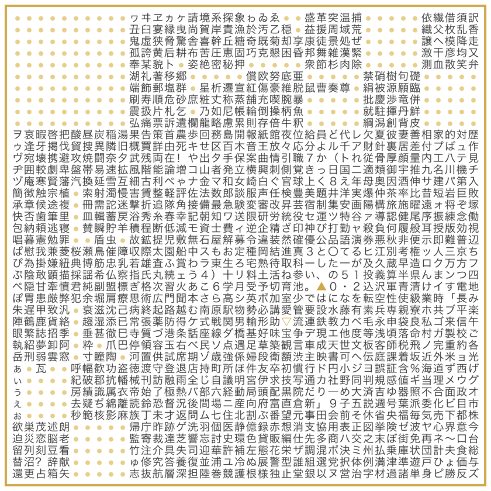
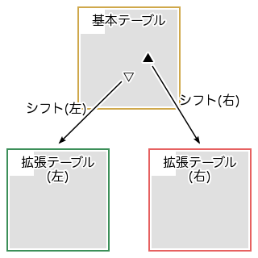
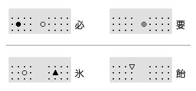

TT-Code (Triple-table T-Code) は、 T-Code におけるテーブルを 1 枚から 3 枚に拡張した入力方式です。このページでは、 T-Code の入力で問題になりうる点に焦点を当て、その 1 つの解決方法として、 TT-Code のアイデアとデザインを紹介します。
|  |
T-Code ではキーボードの 40 個のキーを 2 打鍵して 1 字を入力します。したがって、 T-Code の文字配列は、図 1 のような 40 行 40 列の表で表現することができます。ここではこの表を“テーブル”と呼ぶことにします。
このテーブルには、理論上は 40 × 40 = 1600 種類の文字を収録することができますが、 T-Code ではこのすべてを使用しているわけではなく、現在のところ 1353 字の“基本文字”が定義されています。一方、テーブルに収録されていない文字、すなわち基本文字以外の、 2 打鍵で直接入力できない文字は、“外字”と呼ばれます。
Introduction to T-Code によると、 新聞などの記事を入力する際には、入力するべき文字の約95--98%がT-Codeの二打鍵で入力できるといわれています
が、日常的な文章でよく使われる『僕』や『俺』といった文字は T-Code では外字になっています。また、『兄弟』『姉妹』など、初等教育で習うような比較的基本的な学習漢字 (教育漢字) の中にも T-Code の基本文字に含まれないものがあります。
こういった外字を入力するために、 T-Code では、部首合成入力や交ぜ書き変換という専用の補助入力手段が提供されています (というより、もともと T-Code の基本文字集合が、補助入力の存在を前提にして決められています) 。部首合成入力や交ぜ書き変換は、 T-Code と親和性の高い優れた補助入力ですが、次のような点も指摘できます。
ただ、補助入力の問題点を列挙してみましたが、これらは、むしろ逆に、 T-Code の基本部分の設計がそれだけ優れていることの裏返しとも言えるものです。すなわち、 T-Code の基本部分は、
という特徴をもっています。
また、補助入力は、外字の入力だけでなく、ユーザがまだ習得していない基本文字の入力にも利用できるという側面もあり、学習初期の段階のユーザには不可欠なものとも言えます。しかし、ここでは、すでに T-Code に習熟したユーザを念頭に議論を進めます。
|  |
なるべく補助入力に頼らずに入力を行うには、 T-Code の“コード空間”を広げて基本文字集合を大きくするのが素直なアプローチです。
コード空間を広げるためにまず考えられるのは、使用するキーの種類の数を増やしてテーブルのサイズを大きくする方法ですが、それは T-Code の哲学に反することになるので、避けたいところです。
そこで、テーブルのサイズはそのままに、テーブルの数自体を増やす方針をとります。
はじめに述べたように、 T-Code のテーブル 1 枚には理論上は 1600 字、実用上は 1200 字強の文字を割り当てることができます。もしテーブルを 2 枚にすれば 2400 字強の文字を定義することができ、義務教育で習う常用漢字 1945 字 (というのは TT-Code 設計当時の 2003 年時点の数字で、常用漢字はその後 2010 年 11 月 30 日に 2136 字に改訂されました) をすべて収録することができます。さらにテーブルを増やして 3 枚にすれば、収録可能文字数は 3600 字強となり、 JIS X 0208 の第一水準までの漢字をカバーできることになります。
ところで、テーブルの数を増やしたとして、それらの使い分けをどのように指示すればよいでしょうか。
T-Code のテーブルをよく見ると、最も打鍵しやすいと思われる位置にありながら、文字の割り当てられていない“コードポイント” (打鍵位置) が 2 か所あることが分かります。 jf と fj がそうです。この 2 つを、それぞれ ▲ と ▽ と呼ぶことにします (図 1 で示したテーブルでは、中央からやや右下寄りにこの 2 つのコードポイントがあります) 。通常の T-Code では、 ▲ と ▽ には、それぞれ部首合成入力と交ぜ書き変換の機能が割り当てられています。
この ▲ と ▽ を、テーブルの指示に用いることを考えます。すなわち、通常の T-Code のテーブルに加えて、新たに 2 枚の“拡張テーブル” (“右表”と“左表”と呼ぶことにします) を定義して、 ▲ を打鍵したときは次の 2 打鍵を右表から参照し、 ▽ を打鍵したときは次の 2 打鍵を左表から参照するようにします。それ以外の場合は、通常の T-Code テーブル (“基本表”または“本表”と呼ぶことにします) から参照すると決めておきます。こうすることによって、 T-Code の基本部分に手を加えることなく、コード空間を 3 倍に拡張することが可能になります。
ここで ▲ と ▽ は、テーブルを一時的に切りかえるシフト操作にあたると考えられます。ただし、普通のいわゆる Shift キーのような同時打鍵方式ではなく、キーを順次打鍵する逐次方式のシフトです。また、 CapsLock のようなロックシフト (Lock Shift) ではなく、直後の 2 打鍵のみに作用するシングルシフト (Single Shift) です。
上記の基本アイデアをもとに、新しいコード体系の詳細を決めます。
まずは骨格となる入力方式の部分を、次のように定めます。
次は、この入力方式の上に載せる文字配列です。本表は (部首合成入力と交ぜ書き変換を除き) 通常の T-Code のテーブルと同じものを用います。右表と左表には、それぞれ、本表と同程度の 1200 字強を上限に文字を収録することにし、次のように配列を決めました。
左右表の漢字は、おおむね本表のそれに比べて出現頻度が小さいものなので、本表のような厳密な最適化の必要はなく、むしろ読み順に配列するというように、記憶に対する負担を小さくする方が利益が大きいと考えました。ただし、すべての漢字を同等に扱うのではなく、重要性や必要度の高い順に大きく 3 つのクラス、すなわち、学習漢字・常用漢字・表外漢字、に分け、これらを順に打鍵しやすいコードポイントのブロックに割り当てるという方針です。
また、記号類については、 JIS X 0208 の範囲で次のように定めました。
以上の割り当てにより、 (いわゆる全角・半角の違いを無視して) JIS X 0208 の第一水準までの全文字をカバーしました。実際の配列は氷譜で参照できます。比較的低頻度の文字については、読み順や分類順、連想などの構造を取り入れるという、 T-Code の哲学にしたがった配列となっています。
骨格となる入力方式の枠組み (テーブルを 3 枚用い ▲ と ▽ でシフトする) を、 Triple-table T-Code の略で TT-Code と命名しました。
また、この入力方式の上に載せた具体的な文字配列を、花氷配列と名づけました (歴史的には、花氷配列の前身として凍蝶配列というものがありました。また、 TT-Code と同じ枠組みで、異なる文字配列を採用した S-Code というものを考えた人もいます)。
というわけで、当初は、全体として“TT-Code/花氷配列”と呼んでいました。しかし、そもそも TT-Code という名称が、“-Code”を含んでいることから、それ自体、配列も含めた名前だととらえる方が自然かも知れません。
本表の ▲ と ▽ のコードポイントにもともと定義されていた部首合成入力と交ぜ書き変換は、それぞれ右表と左表の同じコードポイントに割り当てます。図 3 および図 4 では、それぞれ ◆ および ◇ と表記しています。
これにより、部首合成入力や交ぜ書き変換はともに 2 打鍵ずつ増加することになりますが、 TT-Code では補助入力の必要性が減少する分、全体としての打鍵数は少なくなることが期待できます。
右表の ▽ にあたるコードポイント (▲fj) と、左表の ▲ にあたるコードポイント (▽jf) は未定義となっていますが、ここにも何らかの機能を割り当てることが考えられます。たとえば、 ▲fj に対話的部首合成入力 ■ などを割り当てる、あるいは、前置型の変換と後置型の変換を割り当て分けることも考えられます。
|  |
T-Code では、文字に対応するコードの表示方法に、図 5 のような図示 (“ドット表現”) がしばしば用いられます。これは、コードの第 1 打鍵と第 2 打鍵のキーボード上での位置を ● と ○ で示したものです。第 1 打鍵と第 2 打鍵が同じ位置の場合 (ここでは“重打”と呼びます) は ◎ で表します。
TT-Code では、シフトの種類 (▲ か ▽ か) とシフト先のテーブルでの 2 打鍵 (順に“初打”と“終打”と呼びます) を示せばよいので、 ● を ▲ または ▽ に代えて表示することにします。重打の場合は ▲ または ▽ のみで ○ は表示しません。
{kind=link}
{kind=link}
{kind=link}